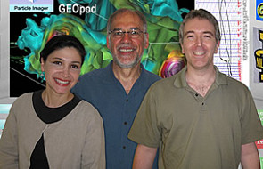

Geopod was developed through the collaborative efforts of the Computer Science and Earth Science
Departments at Millersville University, Millersville, PA. The
Geopod project was funded by the National Science Foundation (grant
number NSF-IIS 0835411).
Project Participants
Student Developers
- Lindsey Young (CSCI)
- Neil Obetz (CSCI)
- Michael Root (CSCI)
- Ky Waegel (CSCI)
- Pavlo Hrizhynku (CSCI)
- Erik Ginter (CSCI)
- Will Gervasio (CSCI)
- Sam Wiley (CSCI)
Student Testers
- Timothy Juliano (ESCI)
- Lindsay Blank (ESCI)
Project Investigators
- Richard Clark, Ph.D. (ESCI)
- Sepideh Yalda, Ph.D. (ESCI)
- Gary Zoppetti, Ph.D. (CSCI)
Consultants
- Kathleen Mackin, Ph.D. (Educational Consultant)
- Heather Zoppetti (Graphics Design)
- Blaise Liffick, Ph.D. (CSCI)
- David Hutchens, Ph.D. (CSCI)
(left
to right): Sepideh Yalda, Richard Clark, Gary Zoppetti
Project Papers
Source Code
Geopod is an open source project. When work on Geopod is
finished, a link to the source code will be available from this
page.